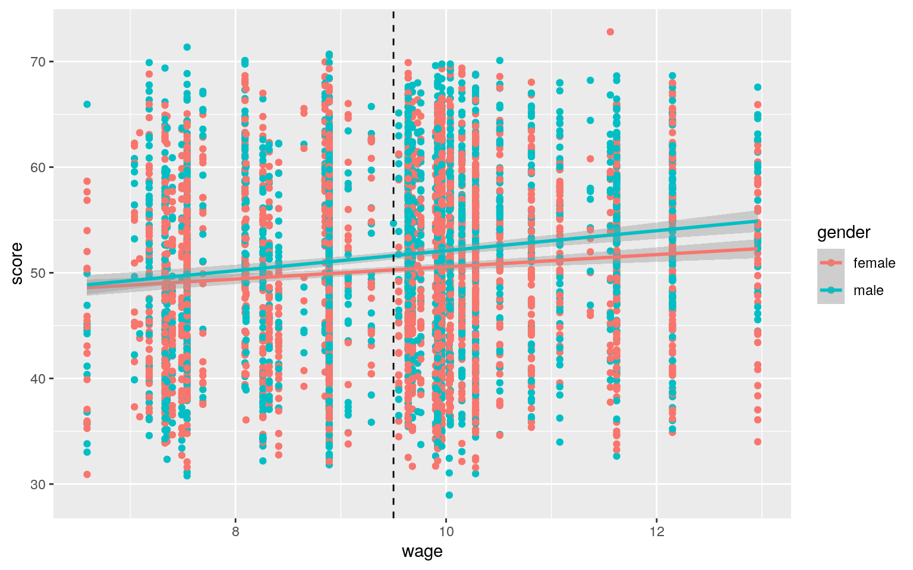

My dataset, ‘CollegeDistance’, involves data from a survey conducted by the Department of Education in 1980. There is a total of 14 variables of this dataset and 4739 observations. There are 8 categorical variables which include ‘gender’, ‘ethnicity’, ‘fcollege’ (if the student’s father was a college grad), ‘mcollege’ (if student’s mom was a college grad), ‘home’ (whether or not the family owns a home), ‘urban’ (if the school is in an urban area),‘income’ (if family income is above $25,000/year) and ‘region’ (West region or other). There are 6 total numeric variables which include the base year composite ‘score’ of high school seniors, ‘unemp’ which represents county unemployment rate in 1980, ‘wage’ (state hourly wage in manufacturing), ‘distance’ (distance from 4-year college), ‘tuition’ (average state tuition of 4-year college), and ‘education’ (years of education).
The code used to read and summarize the data is shown below.
library(tidyverse)
library(dplyr)
library(readr)
CollegeDistance <- read.csv("CollegeDistance.csv")
CollegeDistance$X1<-NULL
summary(CollegeDistance) #summarize CollegeDistnace dataset## X gender ethnicity score fcollege mcollege home
## Min. : 1 female:2600 afam : 786 Min. :28.95 no :3753
no :4088 no : 852
## 1st Qu.: 1186 male :2139 hispanic: 903 1st Qu.:43.92
yes: 986 yes: 651 yes:3887
## Median : 2370 other :3050 Median :51.19
## Mean : 3955 Mean :50.89
## 3rd Qu.: 3554 3rd Qu.:57.77
## Max. :37810 Max. :72.81
## urban unemp wage distance tuition education
## no :3635 Min. : 1.400 Min. : 6.590 Min. : 0.000 Min.
:0.2575 Min. :12.00
## yes:1104 1st Qu.: 5.900 1st Qu.: 8.850 1st Qu.: 0.400
1st Qu.:0.4850 1st Qu.:12.00
## Median : 7.100 Median : 9.680 Median : 1.000 Median
:0.8245 Median :13.00
## Mean : 7.597 Mean : 9.501 Mean : 1.803 Mean :0.8146 Mean
:13.81
## 3rd Qu.: 8.900 3rd Qu.:10.150 3rd Qu.: 2.500 3rd
Qu.:1.1270 3rd Qu.:16.00
## Max. :24.900 Max. :12.960 Max. :20.000 Max. :1.4042
Max. :18.00
## income region
## high:1365 other:3796
## low :3374 west : 943
##
##
##
##The results of the MANOVA test indicate that at least one county differs for at least one response variable. After the MANOVA, I performed 6 univariate ANOVAs which showed that the variable ‘score’ showed a mean difference across groups or ‘gender’. I then performed 6 post-hoc tests and these tests showed that only score significantly differed among the gender groups.
Since I performed a total of 13 hypothesis tests (1 MANOVA, 6 univariate ANOVAs and 6 post-hoc),the probability of committing a Type I error is about 48.67%. The Bonferroni correction should be to set alpha equal to 0.03846.Using this correction, there is not a significant difference in the groups between the response variables.
Some MANOVA assumptions include random samples/independent observations, multivariate normality of DVs, and homogeneity of within-group covariance matrices; it is not likely that these assumptions have been met, as the hypothesis tests for homogeneity and for multivariate normality resulted in p-values below 0.05, indicating that the null hypotheses (assumption for homogeneity and multivariate normality) were not met.
#MANOVA
mancollege <- manova(cbind(score, unemp, wage, distance, tuition, education)~gender, data=CollegeDistance)
summary(mancollege) ## Df Pillai approx F num Df den Df Pr(>F)
## gender 1 0.0088288 7.025 6 4732 1.855e-07 ***
## Residuals 4737
## ---
## Signif. codes: 0 '***' 0.001 '**' 0.01 '*' 0.05 '.' 0.1
' ' 1#univariate ANOVAs
summary.aov(mancollege)## Response score :
## Df Sum Sq Mean Sq F value Pr(>F)
## gender 1 2306 2305.89 30.642 3.27e-08 ***
## Residuals 4737 356471 75.25
## ---
## Signif. codes: 0 '***' 0.001 '**' 0.01 '*' 0.05 '.' 0.1
' ' 1
##
## Response unemp :
## Df Sum Sq Mean Sq F value Pr(>F)
## gender 1 29 29.1457 3.8185 0.05075 .
## Residuals 4737 36157 7.6328
## ---
## Signif. codes: 0 '***' 0.001 '**' 0.01 '*' 0.05 '.' 0.1
' ' 1
##
## Response wage :
## Df Sum Sq Mean Sq F value Pr(>F)
## gender 1 6.3 6.3282 3.5101 0.06106 .
## Residuals 4737 8540.2 1.8029
## ---
## Signif. codes: 0 '***' 0.001 '**' 0.01 '*' 0.05 '.' 0.1
' ' 1
##
## Response distance :
## Df Sum Sq Mean Sq F value Pr(>F)
## gender 1 0.3 0.2960 0.0561 0.8128
## Residuals 4737 25001.2 5.2778
##
## Response tuition :
## Df Sum Sq Mean Sq F value Pr(>F)
## gender 1 0.04 0.044479 0.3858 0.5345
## Residuals 4737 546.07 0.115278
##
## Response education :
## Df Sum Sq Mean Sq F value Pr(>F)
## gender 1 1.4 1.4457 0.4516 0.5016
## Residuals 4737 15164.4 3.2013pairwise.t.test(CollegeDistance$score,CollegeDistance$gender, p.adj="none")##
## Pairwise comparisons using t tests with pooled SD
##
## data: CollegeDistance$score and CollegeDistance$gender
##
## female
## male 3.3e-08
##
## P value adjustment method: nonepairwise.t.test(CollegeDistance$unemp,CollegeDistance$gender, p.adj="none")##
## Pairwise comparisons using t tests with pooled SD
##
## data: CollegeDistance$unemp and CollegeDistance$gender
##
## female
## male 0.051
##
## P value adjustment method: nonepairwise.t.test(CollegeDistance$wage,CollegeDistance$gender, p.adj="none")##
## Pairwise comparisons using t tests with pooled SD
##
## data: CollegeDistance$wage and CollegeDistance$gender
##
## female
## male 0.061
##
## P value adjustment method: nonepairwise.t.test(CollegeDistance$distance,CollegeDistance$gender, p.adj="none")##
## Pairwise comparisons using t tests with pooled SD
##
## data: CollegeDistance$distance and
CollegeDistance$gender
##
## female
## male 0.81
##
## P value adjustment method: nonepairwise.t.test(CollegeDistance$tuition,CollegeDistance$gender, p.adj="none")##
## Pairwise comparisons using t tests with pooled SD
##
## data: CollegeDistance$tuition and CollegeDistance$gender
##
## female
## male 0.53
##
## P value adjustment method: nonepairwise.t.test(CollegeDistance$education,CollegeDistance$gender, p.adj="none")##
## Pairwise comparisons using t tests with pooled SD
##
## data: CollegeDistance$education and
CollegeDistance$gender
##
## female
## male 0.5
##
## P value adjustment method: nonelibrary(rstatix)#Test multivariate normality for each group (null: normality met)
group <- CollegeDistance$gender
DVs <- CollegeDistance %>% select(score, unemp, wage, distance, tuition, education)
sapply(split(DVs,group), mshapiro_test)## female male
## statistic 0.7828114 0.8502496
## p.value 2.726235e-50 4.9327e-41box_m(DVs, group)#Box's M test (null: homogeneity of vcov mats assumption met)## # A tibble: 1 x 4
## statistic p.value parameter method
## <dbl> <dbl> <dbl> <chr>
## 1 37.9 0.0132 21 Box's M-test for Homogeneity of
Covariance MatricesI will be using a mean difference randomization test. The null hypothesis will be that base year composite test score for high school seniors is the same for a school an urban area or a non-urban area. The alternative hypothesis would be that base year composite test score for high school seniors is different for schools in an urban area or a non-urban area. The test resulted in a p-value less than 0.05 (p-value of 0), so the null hypothesis is rejected, implying that there is a significant difference in score between schools in urban areas and schools in non-urban areas.
CollegeDistance%>%group_by(urban)%>%summarize(means=mean(score))%>%summarize(`mean_diff`=diff(means)) #-1.752466## # A tibble: 1 x 1
## mean_diff
## <dbl>
## 1 -1.75rand_dist<- vector()
for(i in 1:5000){
new<- data.frame(score=sample(CollegeDistance$score), urban=CollegeDistance$urban)
rand_dist[i] <- mean(new[new$urban == "yes",]$score)-
mean(new[new$urban == "no",]$score)
}
mean(rand_dist < -1.752466 | rand_dist > 1.752466)## [1] 0{hist(rand_dist,main="",ylab=""); abline(v = c(-1.752466, 1.752466),col="red")}- 3. (40 pts) Build a linear regression model predicting one of your response variables from at least 2 other variables, including their interaction. Mean-center any numeric variables involved in the interaction.
- Interpret the coefficient estimates (do not discuss significance) (10)
- Plot the regression using `ggplot()` using geom_smooth(method="lm"). If your interaction is numeric by numeric, refer to code in the slides to make the plot or check out the `interactions` package, which makes this easier. If you have 3 or more predictors, just chose two of them to plot for convenience. (10)
- What proportion of the variation in the outcome does your model explain? (4)
- Check assumptions of linearity, normality, and homoskedasticity either graphically or using a hypothesis test (5)
- Regardless, recompute regression results with robust standard errors via `coeftest(..., vcov=vcovHC(...))`. Discuss significance of results, including any changes from before/after robust SEs if applicable. (10)The linear regression model indicates that the average score for females is -0.6135 when wage is zero. For every one unit increase in wage, score goes up by 0.5789 for females. Also, males with a wage of zero have a predicted score that is 1.3445 points higher than females with a wage of zero, and the slope of wage on score is 0.3666 higher than females. Furthermore, 0.0197 of the variation in the outcome is explained by the model.
When checking assumptions graphically and using a hypothesis test for homoskedasticity, the model does not display linearity and it does not show homoskedasticity very well either, so the model is not satisfactory. However, the model seems to pass the normality assumption. Using robust standard errors, the relationship (slope) of wage on score for males is now significant. Values that did not change include scores for females with zero wage (still significant) being 0.6135 points lower than males with a wage of zero, males’ scores being 1.344 points higher than females at a wage of zero, and the wage is still significantly associated with scores of females: for every one unit increase in wage, score goes up by 0.5789.
library(sandwich); library(lmtest)
CollegeDistance$score_c <- CollegeDistance$score - mean(CollegeDistance$score)
CollegeDistance$wage_c <- CollegeDistance$wage - mean(CollegeDistance$wage)
fitcollege<-lm(score_c~gender*wage_c, data=CollegeDistance) #linear regression
summary(fitcollege)##
## Call:
## lm(formula = score_c ~ gender * wage_c, data =
CollegeDistance)
##
## Residuals:
## Min 1Q Median 3Q Max
## -23.1706 -6.7752 0.2272 6.7482 21.5936
##
## Coefficients:
## Estimate Std. Error t value Pr(>|t|)
## (Intercept) -0.6135 0.1690 -3.630 0.000287 ***
## gendermale 1.3445 0.2516 5.344 9.54e-08 ***
## wage_c 0.5789 0.1252 4.625 3.84e-06 ***
## gendermale:wage_c 0.3666 0.1876 1.954 0.050742 .
## ---
## Signif. codes: 0 '***' 0.001 '**' 0.01 '*' 0.05 '.' 0.1
' ' 1
##
## Residual standard error: 8.616 on 4735 degrees of
freedom
## Multiple R-squared: 0.02032, Adjusted R-squared: 0.0197
## F-statistic: 32.74 on 3 and 4735 DF, p-value: < 2.2e-16CollegeDistance %>% select(score, wage, gender) %>% na.omit %>% ggplot(aes(wage, score, color=gender)) +
geom_point()+geom_smooth(method="lm") + geom_vline(xintercept=mean(CollegeDistance$wage,na.rm=T),lty=2)
residscollege<-fitcollege$residuals; fitvals<-fitcollege$fitted.values
ggplot()+geom_point(aes(fitvals,residscollege))+geom_hline(yintercept=0, col="red") #graph looking for linearity and homoskedasticitybptest(fitcollege) # null: homoskedastic ##
## studentized Breusch-Pagan test
##
## data: fitcollege
## BP = 20.493, df = 3, p-value = 0.0001342ggplot()+geom_histogram(aes(residscollege), bins=20) #normality#corrected SE
coeftest(fitcollege, vcov = vcovHC(fitcollege))[,1:4]## Estimate Std. Error t value Pr(>|t|)
## (Intercept) -0.6135079 0.1657800 -3.700735 2.174176e-04
## gendermale 1.3444705 0.2530834 5.312362 1.131730e-07
## wage_c 0.5788786 0.1212740 4.773310 1.866826e-06
## gendermale:wage_c 0.3665881 0.1848205 1.983481
4.737134e-02The original and robust SEs are very similar, but the bootstrapped SEs values differ; the SE for females and males is much larger, the wage SE is smaller. The only SE that does not differ is for the slope of wage on score for males. This would mean that the p-values would also be adjusted using the bootstrapped SEs.
boot_dat1<- sample_frac(CollegeDistance, replace=T)#sample rows from dataset
samp_distn<-replicate(5000, {
boot_dat1 <- sample_frac(CollegeDistance, replace=T) #take bootstrap sample of rows
fitcollege1 <- lm(score~wage*gender, data=boot_dat1) #fit model on bootstrap sample
coef(fitcollege1) #save coefs
})
## Estimated SEs
samp_distn %>% t %>% as.data.frame %>% summarize_all(sd)## (Intercept) wage gendermale wage:gendermale
## 1 1.163654 0.1219108 1.791433 0.18570615. (30 pts) Fit a logistic regression model predicting a binary variable (if you don’t have one, make/get one) from at least two explanatory variables (interaction not necessary).
As a result of the logistic regression model, holding wage constant, going up 1 for score multiplies odds by a factor of e^0.0453=1.0463 and this is a significant effect.When controlling for score, going up 1 for wage multiplies odds by a factor of e^0.0885=1.0925 which is a significant effect. When wage and score were zero, the income predicted to be above $25000 a year was -4.087. These results are not accurate though as the AUC value is 0.3813 which is very poor. For the classification diagnostics, the accuracy was 0.712, sensitivity was 0.5714, specificity was 0.7128, and precision was 0.00586 which is very low. Looking at the ROC curve, predicting perfectly, TPR would be 1 while FPR would be 0 for any cutoff except 100% and there is a probability that ‘low’ income would have a higher logit/probability than ‘high’ income.
#Logistic Regression
CollegeDistance1<-CollegeDistance%>%mutate(y=ifelse(income=="high",1,0))
CollegeDistance1$income<-factor(CollegeDistance1$income,levels=c("high","low"))
fitClog<-glm(y~score+wage, data=CollegeDistance1, family="binomial")
coeftest(fitClog)##
## z test of coefficients:
##
## Estimate Std. Error z value Pr(>|z|)
## (Intercept) -4.0870443 0.2978970 -13.7197 < 2.2e-16 ***
## score 0.0452659 0.0038767 11.6764 < 2.2e-16 ***
## wage 0.0885176 0.0244787 3.6161 0.0002991 ***
## ---
## Signif. codes: 0 '***' 0.001 '**' 0.01 '*' 0.05 '.' 0.1
' ' 1exp(coef(fitClog))## (Intercept) score wage
## 0.01678878 1.04630600 1.09255349probs<-predict(fitClog,type="response")
#Confusion matrix
table(predict=as.numeric(probs>.5),truth=CollegeDistance1$y)%>%addmargins## truth
## predict 0 1 Sum
## 0 3368 1357 4725
## 1 6 8 14
## Sum 3374 1365 4739#Density Plot
CollegeDistance1$logit<-predict(fitClog,type="link")
CollegeDistance1%>%ggplot()+geom_density(aes(logit,color=income,fill=income), alpha=.4)+
theme(legend.position=c(.85,.85))+geom_vline(xintercept=0)+xlab("logit (log-odds)")+
geom_rug(aes(logit,color=income))+
geom_text(x=-5,y=.07,label="TN = 431")+
geom_text(x=-1.75,y=.008,label="FN = 19")+
geom_text(x=1,y=.006,label="FP = 13")+
geom_text(x=5,y=.04,label="TP = 220")#ROC curve and AUC
library(plotROC)
ROCplot<-ggplot(CollegeDistance1)+geom_roc(aes(d=income,m=probs), n.cuts=0)
ROCplotcalc_auc(ROCplot)## PANEL group AUC
## 1 1 -1 0.3812981(8+3368)/4739 #Accuracy## [1] 0.71238668/14 #Sensitivity (TPR)## [1] 0.57142863368/4725 #Specificity (TNR)## [1] 0.71280428/1365 #ppv (precision)## [1] 0.0058608066. (25 pts) Perform a logistic regression predicting the same binary response variable from ALL of the rest of your variables (the more, the better!)
lambda.1se). Discuss which variables are retained. (5)For the logistic regression model on all of the rest of my variables, the accuracy is a value of 0.7647 which is a fair value, the sensitivity is 0.3802, specificity is 0.9203, precision is 0.6586 which could be better, and the AUC value is a fair value of 0.7502. In the 10-fold CV, the out-of-sample classification diagnostics are pretty similar to the original model. The classification diagnostics include: an accuracy of 0.7643, a sensitivity of 0.3781, specificity of 0.9208, precision of 0.6589 and an AUC value of 0.7461 which is still considered to be fair.
The variables retained or selected by LASSO were gender (female), ethnicity (other), fcollege (yes), mcollege (yes), home(yes), urban(yes), unemp, wage, distance, and education. The out-of-sample AUC in the 10-fold CV using only the selected lasso variables was 0.7465 which is very similar to the out-of-sample AUC in the 10-fold CV using all of the other variables as well as the AUC result from the original logistic ‘fitall’ model.
library(lmtest)
drop.cols <- c('score_c', 'wage_c', 'logit', 'income')
CollegeDistance2<- CollegeDistance1 %>% select(-one_of(drop.cols))
fitall<-glm(y~., data=CollegeDistance2, family="binomial")
exp(coef(fitall))## (Intercept) X gendermale ethnicityhispanic
ethnicityother
## 0.008491607 1.000011848 1.239991106 0.870197152
1.561502301
## score fcollegeyes mcollegeyes homeyes urbanyes
## 0.997063334 3.456156844 1.743488878 2.008676106
0.753234838
## unemp wage distance tuition education
## 0.953446206 1.082572134 0.946782455 1.260870845
1.165351578
## regionwest
## 1.082843669coeftest(fitall)##
## z test of coefficients:
##
## Estimate Std. Error z value Pr(>|z|)
## (Intercept) -4.7687e+00 4.0674e-01 -11.7242 < 2.2e-16
***
## X 1.1848e-05 8.1239e-06 1.4585 0.144716
## gendermale 2.1510e-01 7.1323e-02 3.0159 0.002562 **
## ethnicityhispanic -1.3904e-01 1.4057e-01 -0.9891
0.322620
## ethnicityother 4.4565e-01 1.1389e-01 3.9130 9.116e-05
***
## score -2.9410e-03 5.0058e-03 -0.5875 0.556854
## fcollegeyes 1.2402e+00 8.8039e-02 14.0865 < 2.2e-16 ***
## mcollegeyes 5.5589e-01 1.0300e-01 5.3968 6.784e-08 ***
## homeyes 6.9748e-01 1.0879e-01 6.4112 1.444e-10 ***
## urbanyes -2.8338e-01 9.2775e-02 -3.0545 0.002255 **
## unemp -4.7672e-02 1.5070e-02 -3.1635 0.001559 **
## wage 7.9340e-02 2.9552e-02 2.6847 0.007259 **
## distance -5.4686e-02 1.9285e-02 -2.8357 0.004572 **
## tuition 2.3180e-01 1.4662e-01 1.5809 0.113890
## education 1.5302e-01 2.2457e-02 6.8141 9.485e-12 ***
## regionwest 7.9591e-02 1.4095e-01 0.5647 0.572283
## ---
## Signif. codes: 0 '***' 0.001 '**' 0.01 '*' 0.05 '.' 0.1
' ' 1prob<-predict(fitall,type="response")
class_diag <- function(probs,truth){
#CONFUSION MATRIX: CALCULATE ACCURACY, TPR, TNR, PPV
if(is.character(truth)==TRUE) truth<-as.factor(truth)
if(is.numeric(truth)==FALSE & is.logical(truth)==FALSE) truth<-as.numeric(truth)-1
tab<-table(factor(probs>.5,levels=c("FALSE","TRUE")),factor(truth, levels=c(0,1)))
acc=sum(diag(tab))/sum(tab)
sens=tab[2,2]/colSums(tab)[2]
spec=tab[1,1]/colSums(tab)[1]
ppv=tab[2,2]/rowSums(tab)[2]
#CALCULATE EXACT AUC
ord<-order(probs, decreasing=TRUE)
probs <- probs[ord]; truth <- truth[ord]
TPR=cumsum(truth)/max(1,sum(truth))
FPR=cumsum(!truth)/max(1,sum(!truth))
dup <-c(probs[-1]>=probs[-length(probs)], FALSE)
TPR <-c(0,TPR[!dup],1); FPR<-c(0,FPR[!dup],1)
n <- length(TPR)
auc <- sum( ((TPR[-1]+TPR[-n])/2) * (FPR[-1]-FPR[-n]))
data.frame(acc,sens,spec,ppv,auc)
}
class_diag(prob,CollegeDistance2$y)## acc sens spec ppv auc
## 1 0.7651403 0.3802198 0.9208654 0.6603053 0.7504172#10-fold CV
set.seed(1234)
k=10
data<-CollegeDistance2[sample(nrow(CollegeDistance2)),]
folds<-cut(seq(1:nrow(CollegeDistance2)),breaks=k,labels=F)
diags<-NULL
for(i in 1:k){
train<-data[folds!=i,]
test<-data[folds==i,]
truth<-test$y
fit<-glm(y~., data=train, family="binomial")
probs<-predict(fit,newdata = test,type="response")
diags<-rbind(diags,class_diag(probs,truth))
}
summarize_all(diags,mean)## acc sens spec ppv auc
## 1 0.7645048 0.3795037 0.9205399 0.6586214 0.7457492#LASSO
library(glmnet)
set.seed(1234)
CollegeDistance2$ethnicity <- factor(CollegeDistance2$ethnicity)
CollegeDistance2$gender <- factor(CollegeDistance2$gender)
CollegeDistance2$fcollege <- factor(CollegeDistance2$fcollege)
CollegeDistance2$mcollege <- factor(CollegeDistance2$mcollege)
CollegeDistance2$home <- factor(CollegeDistance2$home)
CollegeDistance2$urban <- factor(CollegeDistance2$urban)
CollegeDistance2$region <- factor(CollegeDistance2$region)
head(model.matrix(y~-1+., data=CollegeDistance2))## X genderfemale gendermale ethnicityhispanic
ethnicityother score fcollegeyes mcollegeyes homeyes
## 1 1 0 1 0 1 39.15 1 0 1
## 2 2 1 0 0 1 48.87 0 0 1
## 3 3 0 1 0 1 48.74 0 0 1
## 4 4 0 1 0 0 40.40 0 0 1
## 5 5 1 0 0 1 40.48 0 0 0
## 6 6 0 1 0 1 54.71 0 0 1
## urbanyes unemp wage distance tuition education
regionwest
## 1 1 6.2 8.09 0.2 0.88915 12 0
## 2 1 6.2 8.09 0.2 0.88915 12 0
## 3 1 6.2 8.09 0.2 0.88915 12 0
## 4 1 6.2 8.09 0.2 0.88915 12 0
## 5 1 5.6 8.09 0.4 0.88915 13 0
## 6 1 5.6 8.09 0.4 0.88915 12 0y1 <- as.matrix(CollegeDistance2$y)
x <- model.matrix(y~ -1+., data=CollegeDistance2) # the -1 drops intercept/ref group
head(x); x<-scale(x) #scale the dataset first## X genderfemale gendermale ethnicityhispanic
ethnicityother score fcollegeyes mcollegeyes homeyes
## 1 1 0 1 0 1 39.15 1 0 1
## 2 2 1 0 0 1 48.87 0 0 1
## 3 3 0 1 0 1 48.74 0 0 1
## 4 4 0 1 0 0 40.40 0 0 1
## 5 5 1 0 0 1 40.48 0 0 0
## 6 6 0 1 0 1 54.71 0 0 1
## urbanyes unemp wage distance tuition education
regionwest
## 1 1 6.2 8.09 0.2 0.88915 12 0
## 2 1 6.2 8.09 0.2 0.88915 12 0
## 3 1 6.2 8.09 0.2 0.88915 12 0
## 4 1 6.2 8.09 0.2 0.88915 12 0
## 5 1 5.6 8.09 0.4 0.88915 13 0
## 6 1 5.6 8.09 0.4 0.88915 12 0cv<-cv.glmnet(x,y1,family="binomial")
lasso<-glmnet(x,y1,family="binomial",lambda=cv$lambda.1se)
coef(lasso)## 17 x 1 sparse Matrix of class "dgCMatrix"
## s0
## (Intercept) -1.00791220
## X .
## genderfemale -0.02682041
## gendermale .
## ethnicityhispanic .
## ethnicityother 0.20625974
## score .
## fcollegeyes 0.48721515
## mcollegeyes 0.15593827
## homeyes 0.17796563
## urbanyes -0.01617994
## unemp -0.03281234
## wage 0.03535459
## distance -0.03066024
## tuition .
## education 0.20802544
## regionwest .#10-fold with selected LASSO variables
set.seed(1234)
k=10 #choose number of folds
CollegeDistance2<-CollegeDistance2 %>% mutate(genderfemale=ifelse(CollegeDistance2$gender=="female",1,0), gendermale=ifelse(CollegeDistance2$gender=="male",1,0))
CollegeDistance2<-CollegeDistance2 %>% mutate(ethnicityother=ifelse(CollegeDistance2$ethnicity=="other",1,0))
CollegeDistance2<-CollegeDistance2 %>% mutate(fcollegeyes=ifelse(CollegeDistance2$fcollege=="yes",1,0))
CollegeDistance2<-CollegeDistance2 %>% mutate(mcollegeyes=ifelse(CollegeDistance2$mcollege=="yes",1,0))
CollegeDistance2<-CollegeDistance2 %>% mutate(homeyes=ifelse(CollegeDistance2$home=="yes",1,0))
CollegeDistance2<-CollegeDistance2 %>% mutate(urbanyes=ifelse(CollegeDistance2$urban=="yes",1,0))
CollegeDistance2<-CollegeDistance2 %>% mutate(regionwest=ifelse(CollegeDistance2$region=="yes",1,0))
data1<-CollegeDistance2[sample(nrow(CollegeDistance2)),] #randomly order rows
folds<-cut(seq(1:nrow(CollegeDistance2)),breaks=k,labels=F) #create folds
diags<-NULL
for(i in 1:k){
## Create training and test sets
train<-data1[folds!=i,]
test<-data1[folds==i,]
truth<-test$y
## Train model on training set
fit<-glm(y~genderfemale+ethnicityother+fcollegeyes+mcollegeyes+homeyes+urbanyes+unemp+wage+distance+education,data=train,family="binomial")
probs<-predict(fit,newdata = test,type="response")
## Test model on test set (save all k results)
diags<-rbind(diags,class_diag(probs,truth))
}
diags%>%summarize_all(mean)## acc sens spec ppv auc
## 1 0.7651381 0.3825228 0.9202271 0.6599566 0.7464592